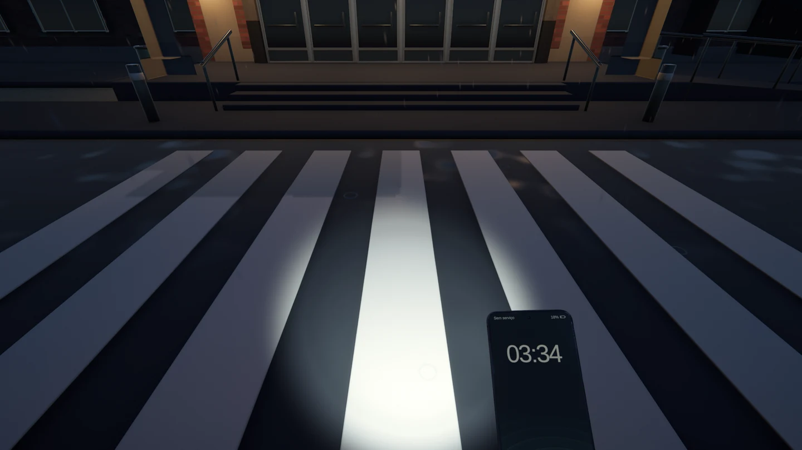
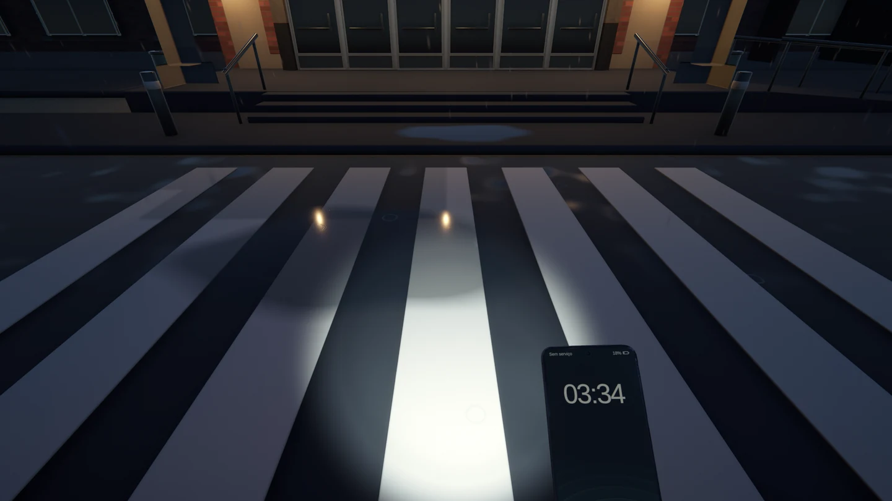
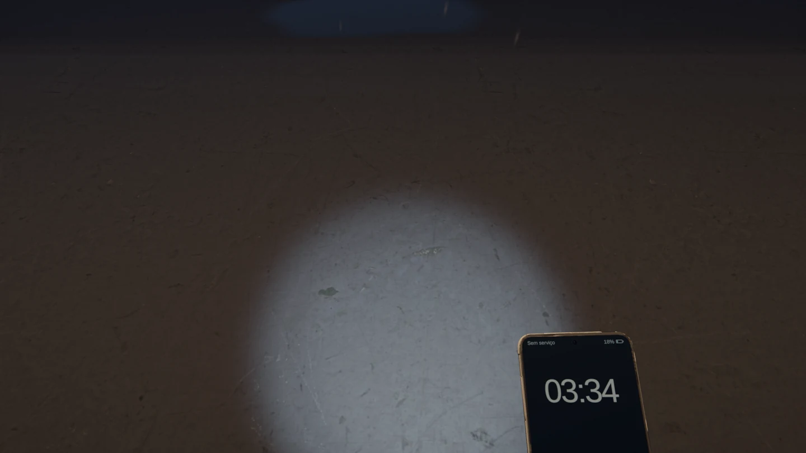
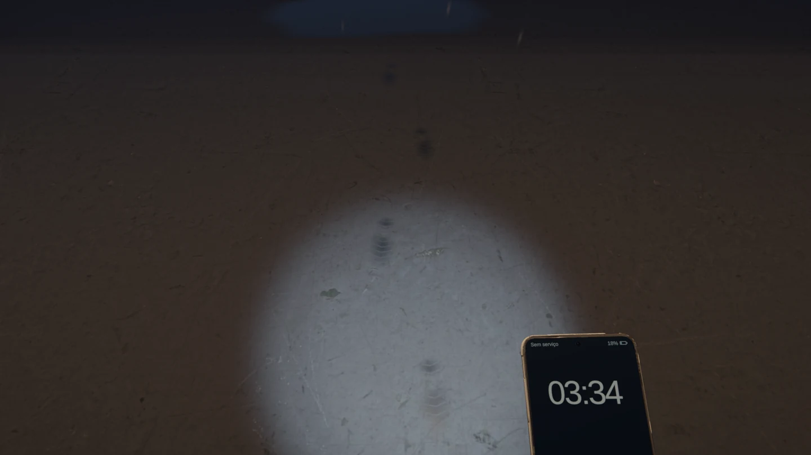
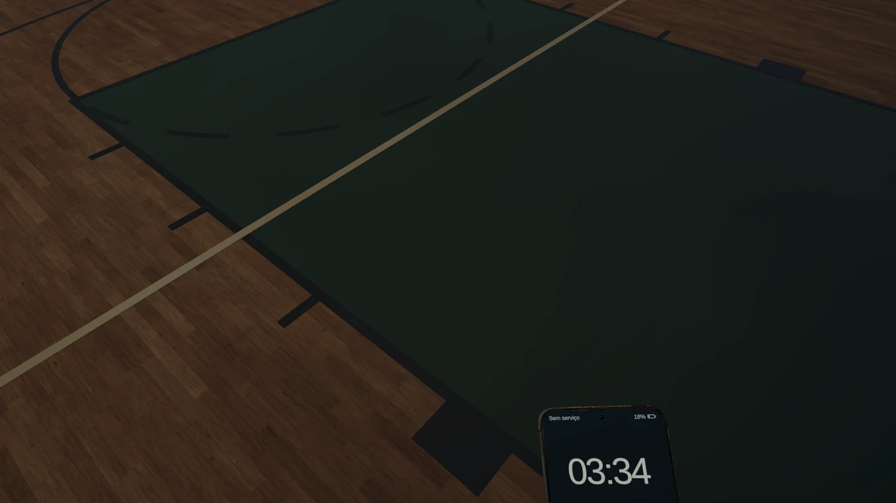
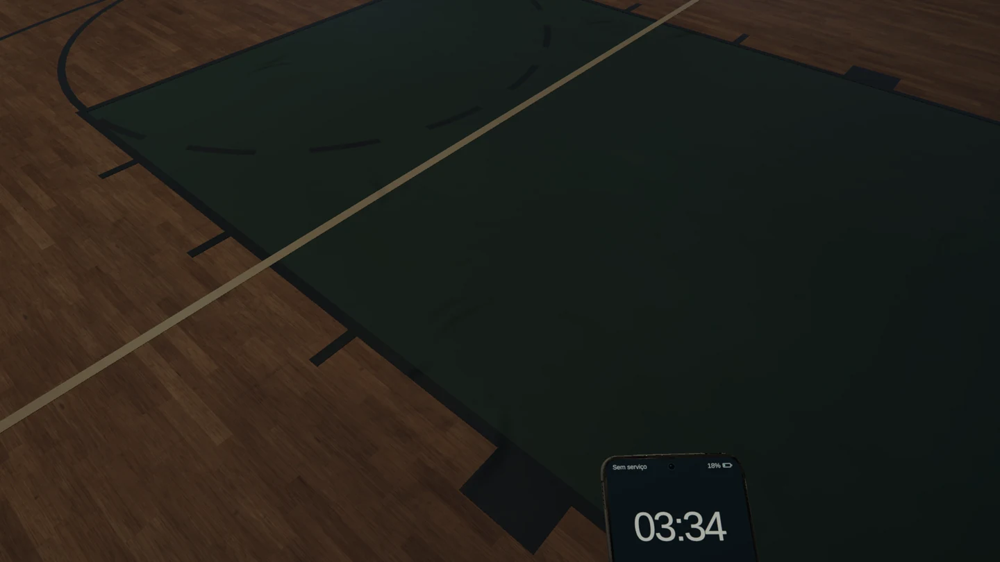

Entrega de
Da chuva ao verniz da quadra
A chuva que já aparecia no facho da lanterna passou a deixar marcas no caminho de Max. Nesta entrega, trabalhamos a água na entrada da escola e o desgaste do piso da quadra.
A chuva chega ao chão
Duas depressões rasas seguram água no trajeto de entrada. As poças refletem as luminárias que já iluminavam a fachada. Quando Max pisa dentro da borda da água, a sola acumula umidade e deixa um rastro nos passos seguintes.


Os passos levam a água para dentro
Cada passada deixa um pouco da água da sola no piso. As marcas alternam entre os pés, perdem força com a caminhada e secam. No teste do executável, cinco pegadas ficaram no vestíbulo depois que a porta fechou. Todas secaram.


O uso muda o verniz da quadra
Concentramos marcas de borracha e diferenças de brilho onde seriam mais comuns, sob as duas cestas e nas laterais de maior circulação. A madeira e a pintura recebem o desgaste. O mesmo detalhe aparece com a lanterna e sob as luzes quentes da quadra.


Como conferimos
Os pares vieram da build em 4K equilibrado, com a mesma câmera em cada comparação. Desligamos apenas o efeito em análise para distinguir a contribuição da água, das solas e do verniz.
Na vista do vestíbulo, alternar o desenho das pegadas na mesma build resultou em 9,19 ms por quadro com as marcas desligadas e 9,22 ms com as marcas ligadas. A medição usou um Mac com M4 Pro e descreve esse trecho.